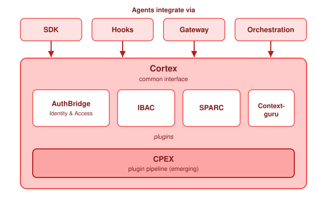

Concepts
Cortex
See and understand what your AI agent sends — every model, tool and API call, on your own machine.
Cortex shows you what your AI agent actually does. It sits on the request path of the agent and reads every model call, every tool call and every external API request that the agent makes. It shows the full content of each request and reply, and for a model call it adds the token count and the cost — live, on your own machine.
It needs no change to your agent. An agent that you did not write, or that you cannot change, therefore gets the same view as one that you wrote. Two experimental plugins can also reduce the traffic: they remove tool definitions that the agent never uses and compact large tool output, which lowers your token usage and your cost.
What you get#
Think of the viewer as top for your coding agent. Where top shows which processes are eating
your CPU, agentop observe shows which agent sessions are eating your tokens, your context window
and your money — live, as they run.
top shows you |
agentop observe shows you |
|---|---|
| Processes | Agent sessions |
| CPU and memory | Tokens, cost and remaining context |
| Per-process detail | Per-session, then per-request detail |
- See every call the agent makes. Model calls, tool calls (MCP) and agent-to-agent messages, parsed as they happen.
- Token and cost numbers for each session. For each model call, the input, cache-read, cache-write and output tokens; and the cost of the session, computed from published rates. See Read the numbers.
- Drill into any request. The exact call the agent sent — the method, the host, the model or tool, the status, the duration and the full request and reply — as content you can read.
- Reduce your token usage (experimental). Remove tool definitions that the agent does not use, and compact large tool output before the model reads it. Both are experimental and off by default. See Cost control and Context compaction.
- No code change. Cortex intercepts the traffic for you. Your agent runs the same way, and the data never leaves your machine.
Privacy and data handling#
Cortex intercepts your agent's traffic through a local proxy on your own machine. It parses each call so that it can show you the content, and it keeps the traffic on that machine.
Cortex does not collect the traffic, and it does not send it to Sentinel or to any other service. There is no telemetry. The data is for you to read and to inspect. When you stop the service, the data goes with it.
That holds for how we count installs, too. We read the download counts that GitHub already publishes for each release, and we subtract the ones our own release tests account for. Nothing is collected from your machine, and the program never calls home to be counted. The figures, and what they do and do not support, are at Install stats.
Install it#
You can run Cortex on macOS or Linux and watch your agent's traffic in about 5 minutes. You do not need a Kubernetes cluster. See Quickstart on a laptop for the step-by-step instructions, or the repository README for the short version.
Give feedback#
Tell us when it breaks
Cortex on a laptop is new. Report an install that failed, a figure that looked wrong, or a step that was not clear. For a condition that already has an answer, read Troubleshooting first.
- Open the Laptop feedback form on sentinel/cortex
- Or write a message in Slack
How it works#
Cortex is the data plane of Sentinel. It is a proxy between an agent and each external service that the agent uses. The external services are models, tools, users and other agents. It intercepts the traffic, which is how it gives you the view above without a change to the agent.

Where Cortex runs#
Cortex is one program with three deployment forms.
| Form | Location | Use |
|---|---|---|
| Sidecar | Next to each workload, in the same pod | The standard form on Kubernetes. The operator injects it. |
| Local proxy | On your computer | The laptop quickstart uses this form. |
| Gateway | In front of a group of workloads | For traffic that has no sidecar. |
On Kubernetes, the sidecar is an Envoy proxy and a Go processor. Envoy moves the data. The processor applies the rules.
The four control points#
Cortex separates requests from responses, in both directions. This gives four control points around each workload.
┌────────┐ 1. inbound request ┌──────────────────────────┐ 2. outbound request ┌──────────────┐
│ │ ────────────────────► │ CORTEX ┌───────┐ CORTEX │ ────────────────────► │ │
│ CALLER │ │ inbound│ AGENT │ outbound│ │ TARGET AGENT │
│ │ ◄──────────────────── │ └───────┘ │ ◄──────────────────── │ OR TOOL │
└────────┘ 4. inbound response └──────────────────────────┘ 3. outbound response └──────────────┘
- Inbound request. Traffic that arrives at the agent. Cortex validates the identity of the caller. It confirms that a user with the correct role sent the request.
- Outbound request. Traffic that the agent starts. Cortex confirms that the agent can reach the target for this user. It also examines the content for sensitive data.
- Outbound response. The reply to a request from the agent. Cortex examines the reply for an attempt to control the agent.
- Inbound response. The reply from the agent to its caller. Cortex examines the reply for data that the user must not receive.
Most platforms control point 1 only. Points 2 and 3 are necessary for agents. An agent that reads a document with a hidden instruction can send a correctly authenticated request that no user asked for.
The plugin chain#
Each control point runs an ordered chain of plugins. A plugin can read the traffic, add data to a shared record, change the content, or stop the request.
The default chain controls identity and delegation.
| Plugin | Control point | Function |
|---|---|---|
jwt-validation |
Inbound request | Validates the signature, the issuer and the audience of the token. Returns 401 if the token is not valid. |
token-exchange |
Outbound request | Exchanges the token, so the agent presents a token that is valid only for the target. |
Every other plugin is optional. Parser plugins read the traffic and record its structure, so that a
later plugin can examine it. The parsers are a2a-parser, mcp-parser and inference-parser.
The optional control plugins use those records. See the Experiments group for each one, and the plugin catalogue for the configuration of each one.
Authentication and authorization are separate decisions#
The chain treats the two decisions differently.
Authentication answers one question: is this identity real? A token that is absent or invalid is rejected at once. There is nothing to evaluate, and an early rejection protects the platform.
Authorization answers a second question: can this identity do this action? Here a plugin records its result. One decision point then evaluates each record together.
The reason is operational. One request from a user can produce many requests inside a group of agents. Each plugin at each control point can stop traffic. A cluster then has thousands of independent decisions, and no single place to examine after a task fails. One record and one decision point keep both the decision and the audit data in one place.
Cortex is moving to CPEX for that decision layer. CPEX combines the results of policy engines such as Cedar and OPA. The controls above do not change when the decision layer changes.
What Cortex does not do#
- It does not change how your agent reasons.
- It does not replace your agent framework. It is below your agent, not in place of it.
- It does not control traffic that avoids it. An agent that opens a connection outside its proxy is outside the security model.
Related pages#
- Quickstart on a laptop runs Cortex as one program on your computer.
- Read the numbers explains the token counts, the cost and the latency that Cortex captures.
- Identity and trust explains where the identities come from.
- AuthBridge describes the two default plugins.
- Authentication flows contains the diagrams.